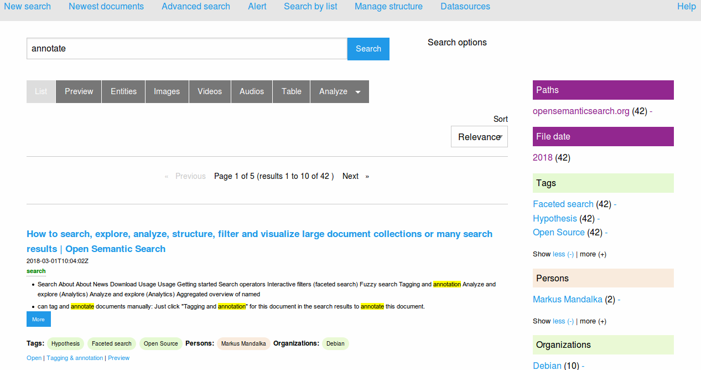

2019
The RBTools for Mac package uses three main tools: Zotero, Hypothes.is and Open Semantic Search
Open Semantic Search Search Engine and Open Source Text Mining & Text Analytics

Instructions
Package
Read the Readme.md file.
Confirm Operating System and disk space requirements are met by looking at readme.md in the Git repository.
Download from the repository at https://github.com/MQ-FOAR705/Osmond-Chiu—Proof-of-Concept—Implementation.git.
Open Zip File.
Control-click the RBTools package in unzipped folder then select open to begin installation and bypass any security settings that may prevent the file from running
Read these instructions.
Instructions
Zotero
Check that Zotero installation file has been mounted if installation does not automatically pop-up.
Drag the Zotero icon to ’Drag here to install’.
Complete Zotero installation.
Instructions
Zotero
Open browser.
Click Register for a Free Account.
Choose the username and email address you want to use for the account.
Click Register and you’ll receive a confirmation email shortly.
Click on the link in the confirmation email you receive to confirm your account set up.
Instructions
Zotero
Open Zotero.
Open Preferences (via the Zotero menu) and select the Sync tab.
Enter your Zotero user name and password.
Click set up syncing.
Check both boxes under File Syncing and choose Zotero storage for My Library.
Close Preferences.
Import relevant file or add item from identifiers to add references.
Click the green circular arrow button at the top right corner of the Zotero program window to sync account with software.
Instructions
Zotero
Overleaf
Open Zotero
Open Preferences (via the Zotero menu) and select the Sync tab.
Enter your Zotero user name and password.
Close Preferences.
Click the green circular arrow button at the top right corner of the Zotero program window to sync account with software.
Go to https://www.overleaf.com/.
Register an Overleaf account if you do not already have one.
Log into Overleaf
Click on Account then Account Settings.
Scroll down the page to Zotero Integration.
Click on ’Link to Zotero’ and you will be prompted to log into Zotero.org
Enter Zotero username and password.
Create a New Private Key.
Click on Accept Defaults and you will be automatically returned to your Overleaf account settings page.
Scroll down to the bottom of the page to check Zotero Integration.
Instructions
Zotero
Overleaf
Go to Overleaf.
Select the project that you want to link to Zotero.
Select New File from the top menu.
Select ’From Zotero’, name the file for the project and choose a format (BibLaTeX).
Go to main.tex file and add your Zotero file (as a bib resource) to header with the codes
\usepackage{biblatex} and \bibliography{name_of_file.bib}.
Instructions
Zotero
Overleaf
Select where you want to place the reference in the text.
Write /cite then enter in citation.
Instructions
Zotero
Overleaf
Select where you want to place the bibliography in the text.
Insert your bibliography by typing into the source code
/printbibliography.
Instructions
Hypothes.is
Open browser
Go to hypothes.is/signup.
Choose a username, enter your email address, and create a password.
Click Sign Up and you will receive a confirmation email to active your account.
Click the link in the email received to validate your email and activate your Hypothes.is account.
Instructions
Hypothes.is
Go to web.hypothes.is/start.
Click add-on for Chrome.
Accept the prompt in the pop up window to install the extension.
Consider adding a bookmarklet if you do not have/use Chrome.
Instructions
Hypothes.is
Go to web.hypothes.is/start.
Drag ’Hypothesis Bookmarklet’ to the bookmarks bar, or right-click/control-click to bookmark the link.
Instructions
Hypothes.is
Identify what you want tagged based on topics, themes, keywords, source types.
Create a text document to list tags.
Write down list of tags based on identified subjects.
Save text document list of tags
Instructions
Hypothes.is
Go to webpage or open a local file in a browser to highlight.
Click on Hypothes.is icon in browser toolbar or bookmarklet.
Click toggle or resize sidebar.
Log into your Hypothes.is account.
Choose whether you want the highlight to be public or in a private group.
Select text that you wish to highlight.
Click on the Highlight icon that appeals.
Instructions
Hypothes.is
Go to webpage or open a local file in a browser to annotate.
Click on Hypothes.is icon in browser toolbar or bookmarklet.
Click toggle or resize sidebar.
Log into your Hypothes.is account.
Choose whether you want the highlight to be public or in a private group.
Select text that you wish to annotate.
Click on the Annotate icon that appeals.
Type annotations in text box.
Type tags for the annotation.
Choose where to post the annotations (public or private group) and click.
Instructions
Hypothes.is
Go to Hypothes.is website.
Log into your Hypothes.is account.
Click on gear icon.
Click on ’Developer.
Click Generate Your API token.
Copy token in text box for use.
Instructions
Open Semantic Search
Double-click on the VirtualBox.pkg installer file displayed in Install-Package folder on Desktop.
Select where to install Oracle VM VirtualBox.
Instructions
Open Semantic Search
Download the virtual machine image Open Semantic Desktop Search.
Find Oracle VM VirtualBox icon in the "Applications" folder in the Finder.
Start VirtualBox.
Go into the menu "File" start the option "Import Appliance".
Click folder icon then choose the Open Semantic Desktop Search .ova file and select "Continue"
Click "Import" at the bottom of the pop-up screen.
Edit the settings of the new virtual machine (choose the virtual machine in the left sidebar and click the Settings button in the top bar).
Go to "Shared Folders" then click the Add Shared Folders icon.
Click on "Folder Path" then select folder.
Activate the option Auto-mount then click "Ok".
Instructions
Open Semantic Search
Start VirtualBox if not open yet.
Select Open Semantic Desktop Search.
Click on Start Icon.
Instructions
Open Semantic Search
Enter text into the Open Semantic Search interface.
Click search.
Select relevant filter in facets on the right navigation sidebar.
Instructions
Open Semantic Search
Click on Manage Structure in the topbar of the Open Semantic Search interface.
Click Add New Entry.
Select Tag as Facet.
Type name of tag in ’Label or name’.
Save tag.
Return to local host search home page.
Instructions
Open Semantic Search
Search for document you wish to tag.
Click Tagging and annotation for this document in the search results.
Tick the checkbox of pre-existing tags.
Click save.
Return to local host search home page.
Instructions
Open Semantic Search
Hypothes.is
Repeat previous instructions to find API token in Hypothes.is account.
Don’t regenerate a new token.
Copy API Token.
Open loaded Open Semantic Search.
Click on Datasources in the topbar of the Open Semantic Search interface.
Click on Annotations (Hypothesis).
Enter copied API Token for Authorization.